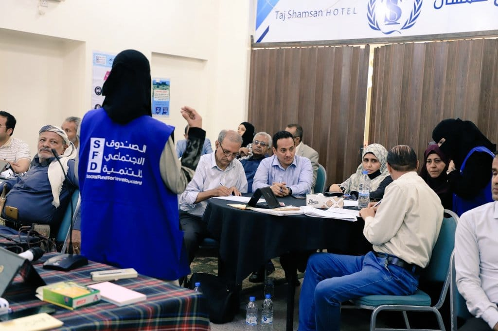

Programs of SDF
Community and Local Development Program , Small and Micro Enterprises Development Program , Capacity Building Program, Labor Intensive Works Program.

The Social Fund for Development (SFD) is a non profit organization working in Yemen. It was established by Law No. 10 of 1997 to contribute to achieve, and align its programs with, goals of the national social and economic development plans for poverty reduction (DPPRs). It has implemented three phases of operations and by, 2011, commenced phase IV.SFD supports development opportunities through improving access to basic services, enhancing economic opportunities and reducing the vulnerability of the poor as well as building capacities at national levels including local authorities and community structures.
Over the past years, the SFD has developed and enhanced the project funding criteria and the operation approaches based on the best international practices that have yielded in remarkable operation progress—both quantitatively and qualitatively. Hence, the SFD has gained a number of international awards as well as confidence of the donors and external evaluation missions who frequently have stated that the SFD has become a development inspiring school and a model player in the national reform policies. Moreover, the SFD stands for an appropriate institutional environment for increasing the absorption capacity of foreign financing provided to Yemen
SFD is funded by a wide range of Donors, including: Yemeni Government, World Bank/IDA, European Union (EU), United Nations Development Program (UNDP) ,United Kingdom (DFID), German Development Bank (KfW), The Netherlands, Arab Fund for Economic and Social Development , Islamic Development Bank, USAID, Prince Claus Trust Fund, Others
Community and Local Development Program , Small and Micro Enterprises Development Program , Capacity Building Program, Labor Intensive Works Program.